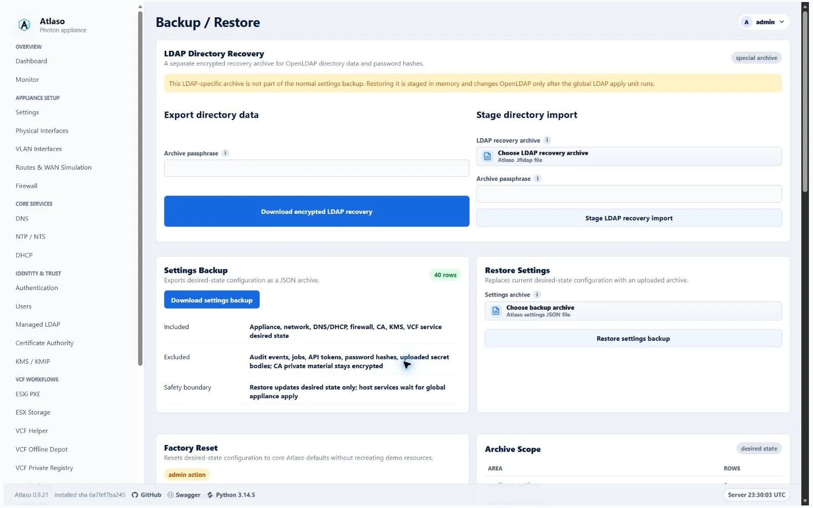
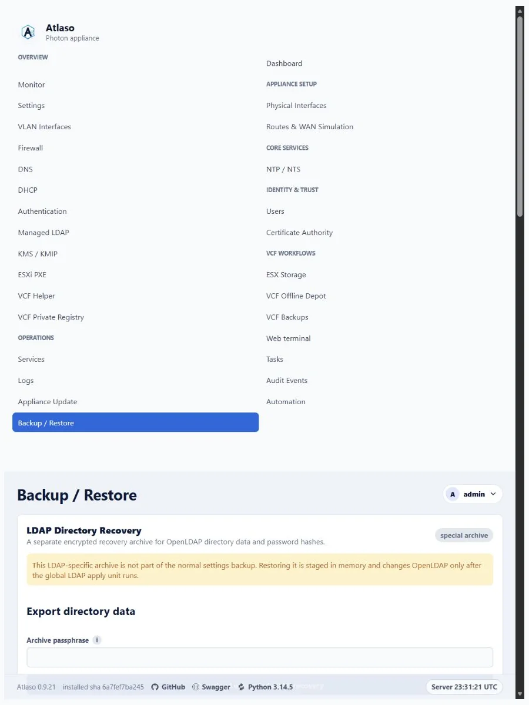

Backup and restore¶
Open Backup and Restore to protect Atlaso settings before maintenance and recover the control-plane configuration when needed.
Interface overview¶
This verified appliance view provides visual orientation before you begin.

Figure: Backup and Restore in the verified clean-appliance desktop state.
Create a backup¶
- Create a named backup before a high-risk configuration or update operation.
- Download the archive and store it according to the environment's access policy.
- Retain the appliance secrets key with the appliance recovery material; encrypted private keys are not portable without it.
Backups can contain operational configuration and encrypted sensitive material. Do not attach them to public issues.
The settings archive includes the browser inactivity and maximum API-token lifetime policies, but it does not include
active browser-session records or API tokens. Restoring a shorter browser timeout affects the next request from an
existing session; it does not recreate a session that has already expired. A complete factory reset restores the
30-minute browser default and 90-day token maximum while invalidating all earlier sessions and tokens.
VCF/ESX password vault entries are not included in settings archives. Restore clears vaults and the unused legacy
Kickstart-binding compatibility table; recreate or reimport vault entries before re-enabling dependent scripts or PXE
workflows. Non-secret ESXi PXE custom-variable catalog definitions and defaults are included so restored Kickstarts
retain their {{custom.*}} prerequisites. Uploaded VCF Private Registry CA bundle bytes are also excluded. When an
enabled registry depends on an uploaded bundle instead of the internal CA, the export records the registry as disabled;
upload the CA bundle again and review the registry settings before re-enabling it.
Return the complete appliance to factory state¶
Factory reset appliance is not a settings-only restore and does not require a later Appliance Apply. After the administrator explicitly chooses whether to keep or change both the bootstrap administrator and root passwords and confirms the destructive action, Atlaso creates a durable non-secret recovery marker, and the privileged runner pins that admitted root-owned state directory without following links before it stops database writers, builds a private replacement database, validates all generated runtime configuration, and activates the clean state for all 16 apply units. Only after the candidate passes validation does Atlaso atomically replace the active database. The management plane restarts and the initiating browser is handed back to sign-in.
The reset:
- removes all control-plane records, including local and external users, password hashes, API tokens, sessions, schedules, queued and completed jobs, automation history, audit events, vault entries, certificates, VLANs, routes, service configuration, and settings-archive metadata;
- stops Atlaso, its worker, and the tty1 console, then repeatedly inventories, stops, and verifies UUID-named
atlaso-helper-action-*transient services until none remain before inventorying and cancelling every boundedatlaso-update-restart-*timer and service; reset cleanup and root-password actions use that bounded family too; it propagates the helper-action mode into the scheduled reset runner so those bounds also apply to web-triggered resets; it then stops and verifies every timestampedatlaso-automation-*transient service and durably clears the bounded managed-script and run staging directories before runtime activation so no in-flight helper, delayed update restart, console mutation, or pre-reset script with a loaded vault credential can outlive the reset transaction; readiness restarts and verifies the console with the other required services; - removes interrupted plaintext Managed LDAP recovery exports through a symlink-resistant bounded directory and durably synchronizes that cleanup before the recovery marker advances;
- stops new SSH admission, terminates and verifies existing root and Atlaso-managed operating-system login sessions, repeats that bounded termination after retained authorization keys are scrubbed, then restores and verifies factory SSH policy through the readiness handoff;
- recreates only factory/bootstrap records, including the bootstrap accounts, management
eth0, the appliance DNS record, and built-in CA profiles; VCF Offline Depot download profiles are not recreated; - enables the minimum routing, firewall, authentication, and management-plane defaults while leaving optional services disabled, then records identical desired and applied baselines so Review appliance changes shows zero pending units;
- inventories live Atlaso-owned VLAN definitions and dedicated route tables after validation, then removes those VLAN links, route-table entries, and route-bound WAN impairment qdiscs before applying factory networking; this bounded cleanup does not depend on a possibly missing or stale database apply baseline; and
- changes the appliance-instance identity, invalidating every earlier browser session and bearer token.
The operation deliberately preserves payload files on documented storage paths. This includes VCF Offline Depot
content under /mnt/atlaso-vcf-offline-depot, backup artifacts under /mnt/atlaso-vcf-backups, VCF Private Registry
payload under /mnt/atlaso-vcf-registry, and managed ESX Storage payloads. Their database references are removed, so
an administrator must explicitly rediscover, reconfigure, or delete retained payload later. Fixed transient Apply
staging under /var/lib/atlaso/apply is scrubbed; secret-bearing Local Users, CA, and LDAP staging is also removed on
failure. Successful reset also removes retained VCF Backup authorized keys, the Web Terminal CA key pair, and pending
Web Terminal signing requests so re-enabling either feature cannot reuse credentials from before reset. The bootstrap
and root account homes are retained, but both accounts' authorized_keys and authorized_keys2 files are removed; other
SSH configuration remains untouched. OIDC browser cookies carry the appliance-instance identity and are rejected after
reset even when a recreated bootstrap user receives the same database identifier. CA
private-key paths present before reset but omitted from validated factory state are removed after runtime activation;
paths retained by factory state are rewritten and preserved. The disabled KMIP service's operational store and KEK are
removed, as are the managed Photon repository file, its embedded credentials, the synchronized update-source state, and
Atlaso-registered PowerShell repositories. Atlaso synchronizes every affected directory before advancing the durable
marker to management-readiness verification, so a reboot cannot restore a deleted staging or credential entry. Payload
storage remains outside this cleanup boundary.
Factory reset refuses to quiesce services or recursively clear Apply staging while the root-owned Atlaso Release finalizer records a pending rollback or forward-completion transaction. It checks again after bounded helper-action quiescence and immediately before staging cleanup, preserving the durable finalizer if a release transaction appears in either race window. Recover the signed release transaction through the normal service-start recovery path, then retry reset after its finalizer is definitive.
The candidate temporarily imports compatible applied baselines so removed resources can be reconciled against their last known state. After activation, Atlaso replaces that mapping with fingerprints for exactly the current factory apply units; retired or unknown baseline keys cannot survive in the replacement database.
Earlier sessions, bearer tokens, service credentials, and removed-account credentials stop working. The reset preserves
the current bootstrap administrator web/Photon password and root password for each Keep current password choice. A
Change password choice applies the submitted value during the protected reset transaction; the administrator value
becomes both the bootstrap web credential and its Photon OS password, while the root value changes only the Photon root
account and does not enable root SSH. New values must satisfy the packaged factory Local Users password policy, even
when the appliance currently permits a weaker policy. Atlaso gives each reset request its own mode-0600 staging file;
the helper admits only one request at a time and a busy request removes only its own file. An admitted request copies
the values into root-only durable reset recovery state, passes OS values through the constrained helper and stdin, and
retains the credential file until a durable post-activation marker proves only readiness remains. Runner and finalizer
then remove it idempotently. Password values never enter
the database, recovery marker, tasks, audits, logs, or UI responses. Sign in using the bootstrap administrator password
selected for the reset. Factory state disables Management HTTPS and restores the packaged management network
(192.168.49.1/24 on eth0), so the browser may lose the old address or HTTPS endpoint. Use the VMware or
hypervisor console to find or correct management networking when the login page does not return at the former URL.
If detached scheduling fails before reset execution begins, a later confirmed submission replaces both the rejected password plan and its scheduling marker before retrying. Once execution has started, a failed marker remains recovery-only; another browser submission cannot replace its credentials or progress.
A second browser submission while the admitted reset timer or service is active returns a retryable busy response. It does not clear the later administrator's session or imply that their password choices replaced the admitted plan. The password summary beside the reset form always describes the packaged factory Local Users policy that validates changed administrator and root values, even when current desired state contains a different policy.
The detached runner waits up to 30 seconds for the scheduler's short admission lock handoff, so a submission racing the
two-second timer cannot strand an accepted request in scheduled. Because the runner is already root, its SystemAdapter
helper calls also bypass a redundant root-to-root sudo hop; this preserves the helper-action isolation mode supplied
by the transient unit without broadening the non-root sudoers contract.
When factory activation changes the Atlaso Management HTTPS service drop-in, the helper reloads systemd but suppresses an Atlaso restart. The reset readiness handoff remains the sole owner of starting Atlaso, worker, console, and nginx after runtime activation and protected credential cleanup finish. Current ordinary Appliance Settings apply does not schedule a management restart. Before activation, reset still stops and verifies any fixed-name management restart timer or service left by an older installation or interrupted legacy apply, then stops and verifies the application services again. This prevents a legacy delayed restart from reviving a database writer during factory replacement.
Reset progress and only the non-secret keep/change choices are recorded outside the database in
/var/lib/atlaso-privileged/factory-reset/request.json; the last successful result is recorded in last-result.json. Atlaso
resumes an incomplete marker before the web control plane starts after
a reboot. The marker remains awaiting_readiness after runtime activation and is removed only after Atlaso, worker,
tty1 console, nginx, and two consecutive management /openapi.json checks are ready. If reset reports failure,
preserve the VM,
inspect journalctl -u atlaso-factory-reset, correct the reported
runtime prerequisite, and reboot or run sudo /opt/atlaso/bin/atlaso-helper factory-reset resume --real from the local
console. Resume is idempotent and retains the old database until a validated candidate is ready for replacement. A
nonblocking transaction lock rejects overlapping scheduled, boot-resume, or console runners without allowing them to
modify the active reset transaction; the pending systemd delay timer is part of that active transaction.
Development and non-appliance fallback reset supports only keeping both passwords and follows the same replacement
boundary without host mutation: Atlaso builds and validates a private SQLite candidate first, then copies its complete
table contents under one BEGIN IMMEDIATE writer transaction. Earlier writers must finish before replacement and later
writers cannot commit until the factory contents are durable, so a pre-reset transaction cannot reintroduce removed
records afterward. A candidate-rendering, schema-contract, or validation failure leaves the source database unchanged.
Restore safely¶
- Take a VM snapshot or equivalent rollback point.
- Select the intended archive and review the restore warning.
- Confirm the destructive restore through the shared confirmation dialog.
- Wait for the restore task to finish, then sign in again if the session was invalidated.
- Review pending desired state before submitting any appliance apply.
Atlaso validates every supplied archive collection, required row field, relationship, and enabled VLAN or static-route
target before it removes current desired state. Enabled service listener addresses must exactly match the addresses
derived from their selected interfaces. Network Objects Source Groups must use nonblank current-format identifiers and names,
nonempty string entry lists, unique identifiers, and assignments that resolve to any or a supplied group. Every
non-comment DNS conditional-forwarder line must include a domain and one or more servers. Because password hashes remain
outside settings archives, exported Managed LDAP users are disabled and restored archives that try to enable a user
without a staged password are rejected. Recover the directory passwords and review user enablement before the next
global LDAP apply. If validation or a later restore phase fails, Atlaso rolls back the database transaction and leaves
any separately staged LDAP recovery import metadata and in-memory payload available. A successful settings restore or
factory reset intentionally clears that staged LDAP recovery material.
After archive rows are restored, Atlaso reconciles only provably factory-derived service names to the domain portion of
the restored appliance FQDN. This upgrades legacy packaged *.atlaso.internal defaults and their exact app-owned A,
AAAA, and CNAME records while preserving customized service hostnames and unrelated or conflicting operator-owned DNS
records. Coupled OIDC issuer and managed-certificate desired state follow the reconciled hostname. Factory reset uses
the same derivation from its factory appliance FQDN; restored service and DNS changes remain desired state until their
documented Appliance Apply units succeed.
OIDC group mappings are preflighted in their effective global, client, and managed-LDAP organization contexts. A client-specific mapping may replace the global mapping for the same source, but effective external group names must remain unique case-insensitively within every context before current desired state is removed. Mapping source fields and external group names must be supplied as JSON strings rather than values that require scalar coercion. Atlaso trims those names before checking effective case-insensitive uniqueness, matching the persisted mapping form.
Restored vSphere Key Provider, trusted-vCenter, and public-certificate identities must use canonical UUIDs so every retained record remains addressable through the management UI and API after restore.
Certificate and signing-key lifecycle state is restored with the desired state. Atlaso reconstructs CA certificate
validity, serial numbers, and SHA-256 fingerprints from the archived public PEM, preserves CA issue, expiry, and
revocation timestamps, and preserves OIDC key activation, retirement, and publication-overlap timestamps so still-live
tokens retain their verification key. Disabled CA certificate rows receive the same bounded status, managed-path, and
supplied-material checks as enabled rows before any current state is removed. Every restored leaf PEM must contain
exactly one canonical public certificate, and every restored chain must contain only its canonical parsed certificates;
every restored CSR must likewise contain only its single canonical public request. None may include trailing or
private-key material. Disabled issued or revoked certificate rows are still verified against the restored CA root before
mutation, so an unrelated certificate serial cannot enter Atlaso's restored revocation state.
Every revoked row must retain both its certificate serial number and revocation timestamp even while the CA or row is
disabled, ensuring later CA enablement can publish a complete CRL.
Certificate, private-key, and chain deployment paths must be unique across archived CA rows and cannot reuse the root,
legacy root, bundle, or CRL publication paths. Enabled NTS settings must reference the exact chain and private-key paths
owned by the restored enabled ntp:nts certificate.
ESXi Network Boot host MAC addresses are normalized and checked for duplicate identities before restore. Installer ISO
references are normalized beneath the managed ISO root before they are restored, so a valid relative archive reference
cannot become dependent on the appliance helper's working directory. VCF Offline Depot archives must retain Atlaso's
fixed /mnt/atlaso-vcf-offline-depot store path; another absolute path is rejected before current desired state is
removed. Archived ESXi custom-variable definitions retain the same 64-entry limit enforced by the management workflow.
ESX Storage resources receive canonical validation even when the optional settings row is absent; Atlaso uses the same
default disabled settings applied during later state reads.
Preflight also requires every canonical service-status row, limits DHCP scopes to access physical interfaces or enabled
VLANs with a matching address family, and reserves Source Group ID any for Atlaso's built-in unrestricted
group. These checks prevent a successful restore from creating missing service controls, publishing DHCP on management
networks, or widening a restricted firewall assignment.
All nonempty DHCP reservation addresses are parsed during preflight, including disabled rows; enabled reservations alone
receive the additional enabled-scope membership check.
An enabled Management HTTPS, NTS, KMS, or OIDC service must reference an enabled, issued managed certificate containing
both its public certificate and encrypted private key. Disabled certificate rows never satisfy service readiness.
Settings restore accepts only the current settings-archive schema v2 and requires its complete section inventory. Older archive schemas are rejected before current desired state is removed; export a fresh archive from a current Atlaso appliance before relying on it for recovery.
Verify identity, DNS, service configuration, and recent tasks after recovery. Restore changes Atlaso state; host services are enforced only through their documented workflows.
Every archived physical-interface and VLAN row must include a non-empty role. Atlaso rejects a missing or null role
before clearing current desired state; only the retired services and storage values receive the bounded compatibility
mapping to access.
Additional verified states¶
These captures show responsive layouts and useful operational states referenced by this page.
Backup and restore¶

Figure: Backup and Restore in the verified clean-appliance responsive state.